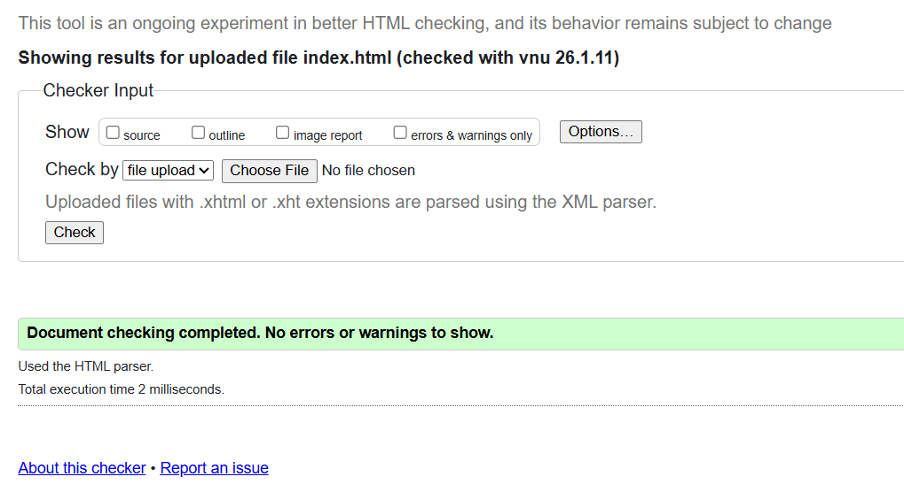
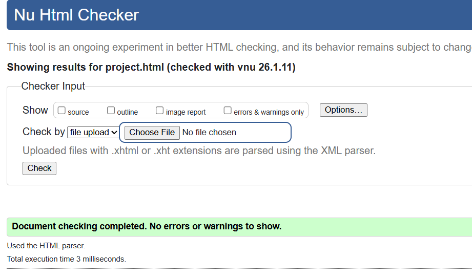
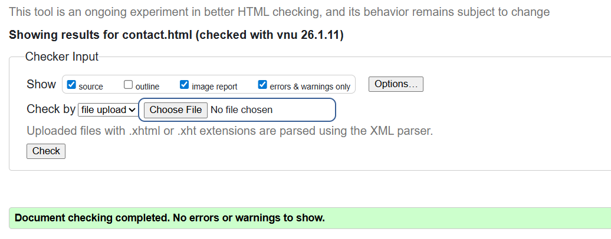
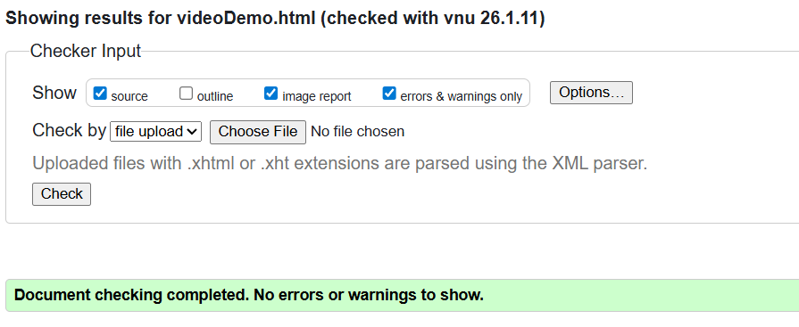
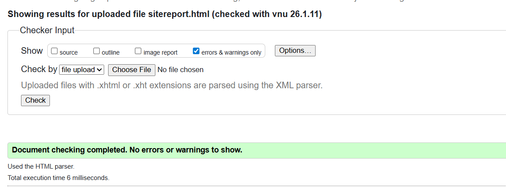
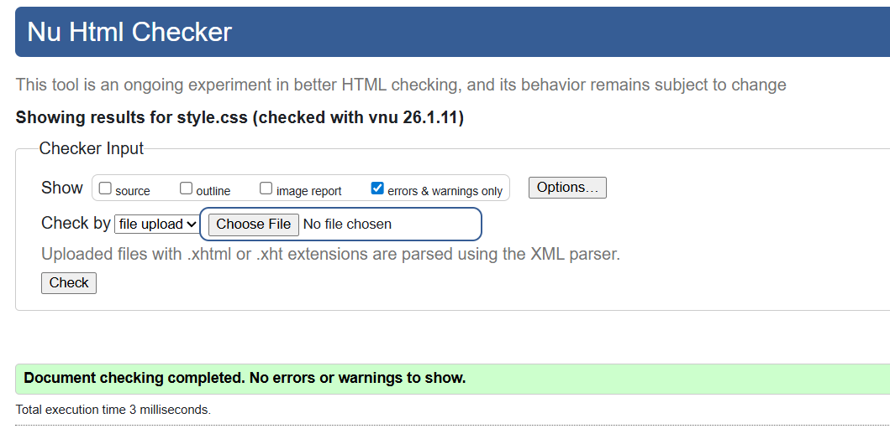

Site Report
Introduction and Learning Experience
This portfolio website was developed as part of the CSY1063 Web Development module. The primary aim of the project was to demonstrate my understanding of HTML5, CSS3, responsive web design, and version control using GitHub. At the beginning of the module, I had limited experience in developing multi-page websites or applying semantic HTML elements correctly.
As the module progressed, I gained a clearer understanding of the importance of
structure and accessibility in web development. I began using semantic elements
such as <header>, <nav>, <main>,
<section>, <article>, and
<footer> appropriately.
This significantly improved the organisation, readability, and maintainability of my code.
Design and Technical Decisions
The design of the website was intentionally kept clean and minimal to prioritise usability and readability. A consistent navigation bar is used across all pages to ensure intuitive user interaction. Neutral colours were selected to create a professional appearance and avoid unnecessary visual distractions.
Flexbox was used primarily for layout alignment, particularly within the navigation bar and general page structure. CSS Grid was implemented on the Projects page to demonstrate a different layout technique and to organise project cards efficiently. Media queries were added to ensure the website adapts effectively to mobile, tablet, and desktop screen sizes.
Development Process and Challenges
One of the main challenges encountered during development was achieving consistent responsiveness across different screen sizes. Initially, some elements did not scale correctly on smaller devices. This issue was resolved by replacing fixed widths with relative units and refining grid and flexbox configurations.
Validation errors were also encountered, mainly due to incorrect nesting and missing attributes. These were resolved by using the W3C HTML and CSS validation tools. Screenshots of successful validation results are included as evidence of standards compliance.
HTML validation result for index page
HTML validation result for project page
HTML validation result for contact page
HTML validation result for videoDemo page
HTML validation result for sitereport page
CSS validation result for style page
GitHub Usage and Reflection
GitHub was used throughout the development process to manage version control. Commits were made regularly across multiple days to document progress, including page creation, layout changes, styling updates, and bug fixes. This practice improved my understanding of incremental development and professional workflow management.
Overall, this project significantly improved my confidence in front-end web development and provided a strong foundation for future modules.
Video Demonstration
The video demonstration explains the structure of each page, design decisions, and CSS concepts used.
Video URL: Website portfolio youtube video link
References
- Mozilla Developer Network (2024) HTML & CSS Documentation. Available at: https://developer.mozilla.org/
- W3C (2024) Markup Validation Service. Available at: https://validator.w3.org/